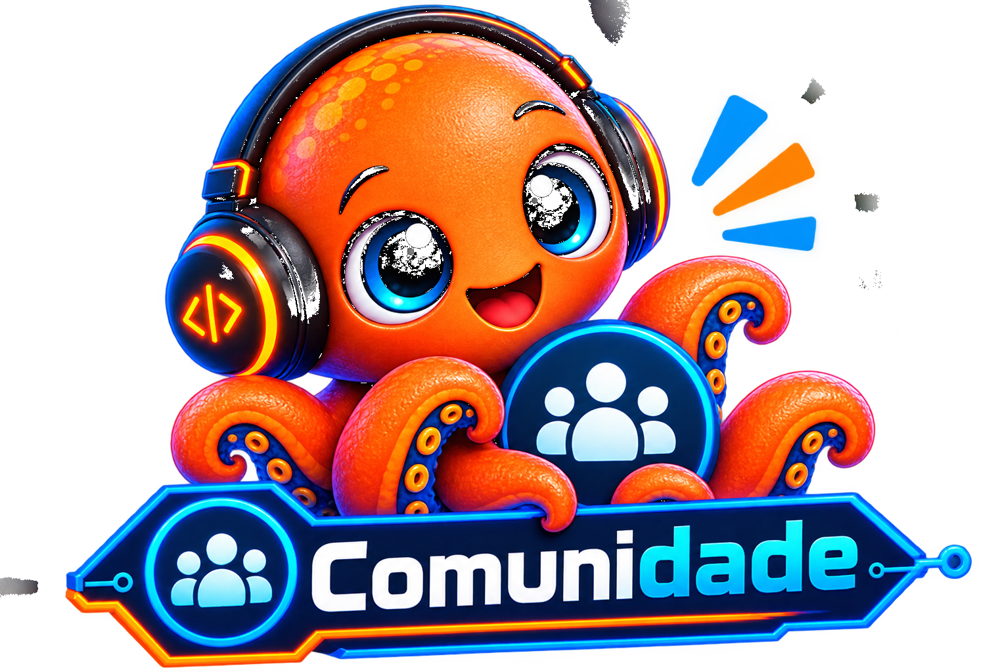

CHEGA DE BLÁ-BLÁ-BLÁ.
VAMOS FAZER!
PraticaTech — Comunidade de TI
Da sala de aula para a prática. Um espaço para aprender de verdade,
colocar a mão na massa, compartilhar experiências e se preparar para oportunidades.
🎯 Nosso Propósito
Transformar conhecimento em capacidade de fazer.
A PraticaTech existe para aproximar pessoas da prática real de tecnologia, criando experiências em que elas possam aprender, fazer, errar, pedir ajuda, resolver problemas e construir algo de verdade.
Queremos transformar o “eu estudei, mas não consigo fazer sozinho” em “eu ainda não sei tudo, mas sei começar, praticar, buscar ajuda e aprender.”
🚀 Nossa Missão
Criar uma comunidade de aprendizagem prática em tecnologia, conectando pessoas que querem aprender com pessoas dispostas a compartilhar conhecimento, experiências, projetos e oportunidades de prática.
Quem quer aprender. Quem quer compartilhar. Quem tem experiências, projetos ou desafios reais para trazer para a comunidade.
🔭 Nossa Visão
Ser uma comunidade reconhecida por transformar aprendizado em experiência prática e preparar pessoas para novas oportunidades no mercado de tecnologia.
Queremos que, diante de uma oportunidade, a pessoa não pense apenas “eu queria saber fazer isso”, mas possa pensar: “eu já pratiquei isso.”
💡 Para quem é
- Quem quer aprender tecnologia do zero.
- Quem já estudou, mas tem dificuldade para colocar em prática.
- Quem quer aprender novas ferramentas e tecnologias.
- Estudantes que precisam de projetos e experiências.
- Profissionais que querem compartilhar o que sabem.
- Empreendedores e empresas com problemas reais para transformar em desafios.
🧭 Nossa Jornada
Na PraticaTech, aprender não termina quando a explicação acaba. A jornada continua até a pessoa experimentar, testar e entender como avançar.
🧡 Nossos Valores
🔥 O que nos diferencia?
Não somos apenas mais uma comunidade de tecnologia. Aqui, a palestra pode ser o começo — não o fim.
- Aprender fazendo.
- Projetos e desafios práticos.
- Espaço para perguntas e erros.
- Material e próximos passos claros.
- Conexões que podem evoluir para colaboração.
- Experiências que podem virar portfólio.
📣 Nosso Compromisso
Na PraticaTech, você não fica sozinho no “agora faça você”.
Se der erro, vamos investigar. Se você não souber onde clicar, mostramos. Se precisar perguntar, pergunte.
Queremos que você saia de cada experiência com algo além de informação: uma habilidade praticada, um problema resolvido, um projeto iniciado, uma experiência vivida ou simplesmente a confiança de dizer: “Eu consegui!”
🎯 Nosso Grande Objetivo
Não prometemos emprego. Construímos preparação. Queremos ajudar você a construir um portfólio de experiências: projetos, prática, conhecimento, conexões, problemas resolvidos e histórias reais para contar.
Porque estar preparado não é saber tudo.
É ter coragem para tentar, capacidade para aprender e humildade para pedir ajuda.
🐙 Vem fazer parte da PraticaTech!
Você quer aprender do zero? Quer aprender algo novo? Já sabe e quer ensinar outras pessoas? Tem um projeto ou desafio para compartilhar?
Então este espaço também é seu.
Entrar na Comunidade 💬